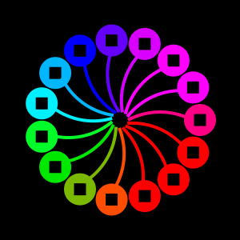
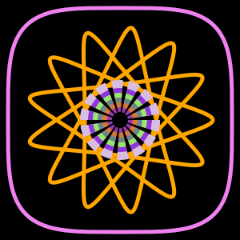
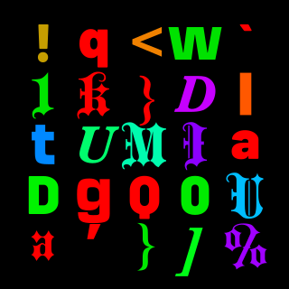
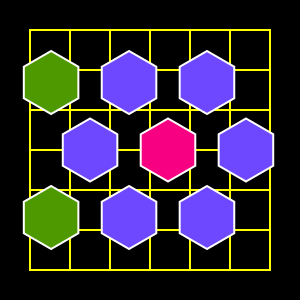
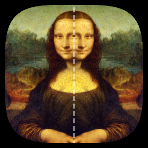

Colorful drawings
With Luxor you can make all kinds of drawings with vector and pixel graphics, static illustrations, diagrams, generative artworks, and simple animations, using colored fills, strokes, patterns, blends, and gradient meshes. There are turtles too, if you like exploring Turtle Graphics.

Graphical toolbox
Luxor provides lots of graphic primitives: lines, rectangles, circles, ellipses, arcs, polygons, Bézier curves, squircles, hypotrochoids, stars, crescents, pies, sectors, plus options for filling, stroking, clipping, and blending shapes. You can build up complex compositions using coordinate transformations (translation, rotation, and scaling) and Boolean operations.

Text
Luxor's text handling allows for custom fonts, text alignment, text-on-a-path, and precise placement, useful for annotated diagrams, posters, and typographic experiments in addition to pure geometric art. You can add text to drawings using the LaTEX and Typst text engines.

Layout
Luxor includes features for common layout tasks, such as arranging objects in grids and tables, creating tiling patterns, and computing point arrangements along paths.

Pixels and noise
Luxor lets you add pixel-based graphics to drawings, and you can interact with Julia's images-processing package Images.jl. You can freely mix pixel images and vector graphics, and there's noise generation tools too, for making graphics based on procedural noise.
Output
You can export drawings to multiple formats, including PNG, SVG, PDF, and EPS, and Luxor integrates well with Jupyter/Pluto notebooks for inline previews. Animations can be exported as animated GIFs and MP4 movies.
The focus of Luxor is on simplicity and ease of use: it should be easier to use than plain Cairo.jl, with shorter names, fewer underscores, default contexts, and simplified functions.
Luxor is thoroughly procedural and static: your code issues a sequence of simple graphics 'commands' until you've completed a drawing, then the results are saved into a PDF, PNG, SVG, or EPS file.
Here's a Luxor drawing showing some of the possibilities:

For more complex and sophisticated graphics in 2D and 3D, Makie.jl is the best choice.
There are some Luxor-related videos on YouTube, and some Luxor-related blog posts at cormullion.github.io/.
Luxor is designed primarily for drawing static pictures and simple animations. If you want to build complex or elaborate animations, use Javis.jl and Makie.
Luxor isn't interactive: for building interactivity, look at Pluto.jl and Makie.
Please submit issues and pull requests on GitHub. Original version by cormullion, much improved with contributions from the Julia community.
Installation and basic usage
Install the package using the package manager:
] add LuxorTo use Luxor, type:
using LuxorTo test:
julia> @svg juliacircles()or
julia> @png juliacircles()which should create a graphic file and possibly also display and/or open it, depending on your environment.
Documentation
This documentation was built using Documenter.jl.
Documentation built 2026-08-19T13:54:30.234 with Julia 1.12.7 on Linux